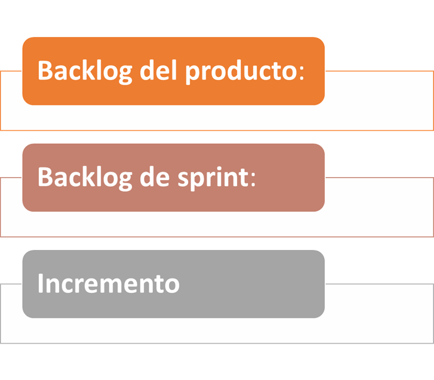

Modelo Scrum
Historia de Scrum
Scrum aparece alrededor del año 1986, y fue creado por Ikujiro Nonaka e Hirotaka Takeuchi, a partir de un estudio que realizaron a distintas empresas que estaban viendo un nuevo enfoque de trabajo.
Más tarde, en 1995, crearon un conjunto de reglas, o conjunto de buenas prácticas, enfocadas al desarrollo de software y la bautizaron con el nombre de Scrum.
Qué es la metodología Scrum
El término “scrum” originalmente surge de un tipo de formación que se realiza en rugby, en la cual los jugadores tienen que sacar la pelota sin tocarla con las manos.
Scrum, como gestión de proyectos, se puede definir como un modelo de desarrollo ágil y flexible, cuya principal prioridad es maximizar el retorno de la inversión (ROI).
Scrum está formado por un conjunto de buenas prácticas que nos van a permitir, trabajando en equipo, conseguir una agilidad que nos va a favorecer mucho durante el desarrollo, y que además nos va a permitir obtener mejores resultados.
FASES:

Backlog del producto
Es la lista principal del trabajo que debe realizar el propietario del producto o el gestor de productos. Se trata de una lista dinámica de funciones, requisitos, mejoras y correcciones que actúa como la entrada para el backlog de sprint. Básicamente, se trata de la lista de "cosas por hacer" del equipo. El propietario del producto está constantemente revisando, cambiando las prioridades y realizando el mantenimiento del backlog del producto, ya que, a medida que sabemos más o que cambia el mercado, es posible que los elementos ya no sean relevantes o que los problemas se solucionen de otras maneras.
Backlog de sprint
Se trata de la lista de elementos, historias de usuario o correcciones de errores, seleccionadas por el equipo de desarrollo, para su implementación en el ciclo actual de sprint. Antes de cada sprint, en la reunión de planificación de sprint el equipo elige los elementos en los que trabajará para el sprint del backlog del producto.
El backlog de sprint puede ser flexible y puede evolucionar durante un sprint. No obstante, no se puede poner en peligro el objetivo fundamental del sprint, lo que el equipo quiere lograr con el sprint actual.
Incremento (u objetivo del sprint)
Es el producto final utilizable de un sprint.
Es posible que no escuche la palabra "incremento" en ningún sitio, ya que a menudo se la conoce como la definición del equipo de "Finalizado", un hito, el objetivo del sprint o incluso una versión completa o un epic lanzado.
Solo depende de la definición de "Finalizado" de tus equipos y de cómo defines tus objetivos del sprint.

Protocolos o eventos de scrum
- Organización del backlog
- Planificación de sprint
- Sprint
- Scrum diario o reunión rápida
- Revisión de sprint
- Retrospectiva de sprint
Organización del backlog
Este evento, que a veces se conoce como limpieza del backlog, es responsabilidad del propietario del producto. Los principales trabajos del propietario del producto son dirigir el producto hacia su visión del producto y estar al tanto del mercado y los clientes. Por tanto, él o ella realiza el mantenimiento de esta lista utilizando los comentarios de los usuarios y del equipo de desarrollo para ayudar a priorizar y mantener la lista limpia y a punto para trabajar sobre ella en cualquier momento
Planificación de sprint
En esta reunión, todo el equipo de desarrollo planifica el trabajo que se va a realizar (alcance) durante el sprint actual. Esta reunión la dirige el experto en scrum y, en ella, el equipo decide el objetivo del sprint. Posteriormente, se añaden historias de usuario específicas al sprint desde el backlog del producto. Estas historias siempre se adecuan al objetivo y también son acordadas por el equipo de scrum para que sea factible implementarlas durante el sprint.
Al final de la reunión de planificación, cada miembro del scrum debe tener claro qué se puede entregar en el sprint y cómo se puede entregar el incremento.
Sprint
Un sprint es el periodo real en que el equipo de scrum trabaja de forma conjunta para finalizar un incremento.
La duración de un sprint suele ser de dos semanas, aunque algunos equipos manifiestan que les resulta más fácil una semana para el alcance o un mes para entregar un incremento valioso.
Cuanto más complejo sea el trabajo y más incógnitas haya, más corto debería ser el sprint. Pero realmente esto depende de tu equipo, y no debes tener miedo de cambiarlo si no funciona. Durante este periodo, el propietario del producto y el equipo de desarrollo podrán renegociar el alcance, en caso de que sea necesario. Aquí está el quid de la naturaleza empírica del scrum.
Todos los eventos (desde la planificación hasta la retrospectiva) tienen lugar durante el sprint. Una vez que se establece un determinado intervalo de tiempo para un sprint, debe seguir siendo coherente durante todo el periodo de desarrollo. Esto ayuda al equipo a aprender de las experiencias pasadas y a aplicar ese conocimiento a futuros sprints.
Scrum diario o reunión rápida
se trata de una reunión diaria de muy corta duración que tiene lugar siempre a la misma hora y en el mismo sitio para facilitar las cosas. Esta reunión también se denomina "reunión rápida diaria“. El objetivo del scrum diario es que todos los miembros del equipo estén en sintonía, se adecuen al objetivo del sprint y dispongan de un plan para las próximas 24 horas.
La reunión rápida es el momento de expresar cualquier inquietud que tengas con el cumplimiento del objetivo del sprint o de notificar los impedimentos existentes.
Una forma habitual de realizar la reunión rápida es que cada miembro del equipo responda tres preguntas en el contexto de alcanzar el objetivo del sprint:
- ¿Qué hice ayer?
- ¿Qué tengo planificado para hoy?
- ¿Hay algún obstáculo?
Revisión de sprint
Al final del sprint, el equipo se reúne en una sesión informal para ver una demostración o inspeccionar el incremento. El equipo de desarrollo muestra los elementos del backlog que ahora están "finalizados" a las partes interesadas y a los compañeros de equipo para recibir comentarios. El propietario del producto puede decidir si lanza o no el incremento, aunque en la mayoría de los casos el incremento se lanza.
Esta reunión de revisión también se produce cuando el propietario del producto repasa el backlog del producto basado en el sprint actual, que se puede utilizar en la próxima sesión de planificación de sprint. Para un sprint de un mes, pon el límite de tu revisión de sprint en un máximo de cuatro horas.
Retrospectiva de sprint
La retrospectiva es donde el equipo se reúne para documentar y analizar qué ha funcionado y qué no ha funcionado en un sprint, un proyecto, en las personas o relaciones, herramientas o incluso para determinados protocolos. La idea es crear un lugar donde el equipo pueda centrarse primordialmente en lo que salió bien y en lo que debe mejorarse para la próxima vez, y menos en lo que salió mal.
Tres funciones esenciales
El propietario del producto de scrum
Los propietarios de producto son quienes más conocen el producto. Están centrados en entender los requisitos empresariales, de los clientes y del mercado, para luego priorizar el trabajo que el equipo de ingeniería debe realizar para cumplirlos. Los propietarios de producto eficaces:
Crean y gestionan el backlog del producto
Se asocian estrechamente con el negocio y el equipo para asegurarse de que todo el mundo entiende los elementos de trabajo en el backlog del producto.
Aportan al equipo directrices claras sobre qué funcionalidades entregar a continuación.
Deciden cuándo lanzar el producto con predisposición hacia una entrega más frecuente.
El propietario del producto no siempre es el gestor de proyectos. Los propietarios de producto se centran en asegurarse de que el equipo de desarrollo entrega el mayor valor a la empresa. Asimismo, es importante que el propietario de producto sea una única persona. Ningún equipo de desarrollo desea directrices cruzadas de varios propietarios de producto.
El experto en scrum
Los expertos en scrum son los mayores especialistas de scrum en el equipo. Proporcionan formación a los equipos, a los propietarios de producto y a la empresa en el proceso de scrum, y buscan formas de afinar su práctica.
Un experto en scrum eficaz conoce profundamente el trabajo que realiza el equipo y puede ayudarlo a optimizar su transparencia y flujo de entrega. Como conseguidor principal, planifican los recursos necesarios (tanto humanos como logísticos) para organizar los plazos de los sprints, las reuniones rápidas, la revisión de sprints y las retrospectivas de sprints.
El equipo de desarrollo de scrum
Los equipos de scrum teams sacan el trabajo adelante. Son los que más conocen las prácticas de desarrollo sostenible. Los equipos de scrum más eficaces tienen una relación estrecha, se encuentran en la misma ubicación y están compuestos por entre cinco y siete miembros.
Los miembros del equipo tienen distintas habilidades y se forman entre sí para que nadie se convierta en un cuello de botella en la entrega de trabajo. Los equipos de scrum sólidos se autorganizan y enfocan sus proyectos con una clara actitud colectiva. Todos los miembros del equipo se ayudan entre sí para asegurar una finalización satisfactoria del sprint.
El equipo de scrum impulsa el plan de cada sprint. Prevén cuánto trabajo creen que pueden finalizar a lo largo de la iteración en función de su historial de velocidad. Mantener una longitud fija de la iteración aporta al equipo de desarrollo feedback sobre su estimación y proceso de entrega, lo cual a su vez consigue que las previsiones sean cada vez más precisas.
Beneficios
Empresas que utilizan Scrum
Multimedia: Bose
Automóviles: Ferrari
Internet: Amazon, Google, Mozilla
Software, Hardware: Adobe, Spotify Central Desktop, IBM, Intel, Microfocus, Microsoft, Apple.